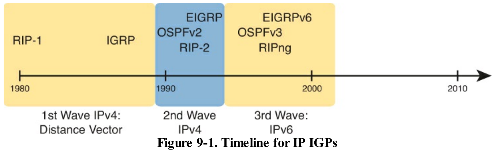
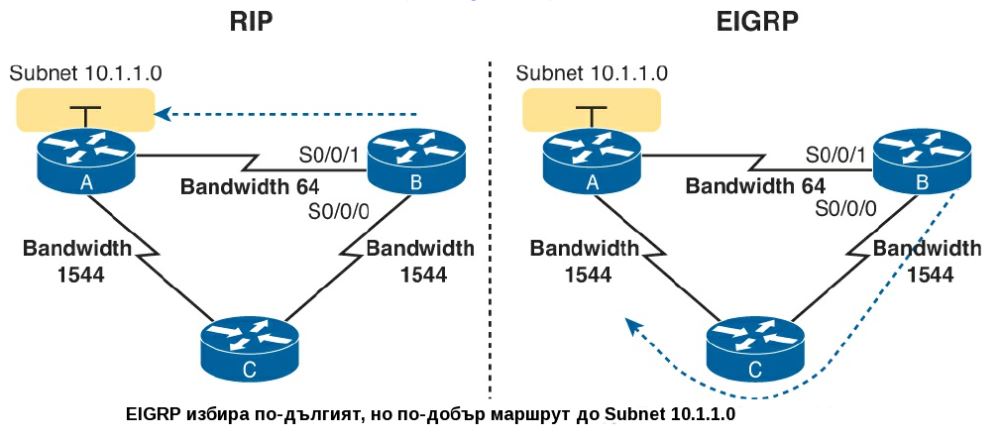

Исторически погледнато, първите IPv4 маршрутизиращи протоколи използват логика свързана с изчисление на векторното разстояние. RIP версия 1 (RIP1) е първият масово използван IP маршрутизиращ протокол, а протоколът на Cisco IGRP (вътрешен маршрутизиращ протокол) се появява малко по-късно, както се вижда на снимката отдолу... 
В началото на 90-те, увеличаващите се нужди на бизнеса, просто налагат появата на нови, по-добри протоколи в IPv4 света. Една от причините е, че RIP1 и IGRP имат някои технически лимити, които през 80-те не са били фактор, но вече са. По-голямата нужда от по-добри маршрутизиращи протоколи обаче, налага голямата миграция към TCP/IP през 90-те. Множество компании заменят старите си бавни мрежи, с мрежи изградени от маршрутизатори, LANs и TCP/IP. Това пък налага нуждата от по-добра производителност на маршрутизиращите протоколи, включително по-добри метрики и по-добра конвергенция. Всички тези фактори водят до появата на новата вълна от IPv4 вътрешни маршрутизиращи протоколи: RIP версия 2 (RIP2), OSPF Версия 2 (OSPFv2) и EIGRP.
Дори и днес, EIGRP и OSPFv2 са основните конкуренти за позицията на стандартен IPv4 маршрутизиращ протокол, който една фирма може да използва (макар че може би трябва да помислят за IPv6). RIP-2 отпада като съперник, отчасти защото има по-бавно време за конвергенция, отчасти защото има по-лоша технология за определяне на метрики, което води до забавяне.
EIGRP има много добри метрики, базирани на честотната лента на връзката (link bandwidth), както и забавянето на връзката (link delay). Тези два фактора позволяват на маршрутизатора да вземе правилното решение за това, кой е най-добрият маршрут, който да използва. 
А сега бих предложил кратко сравнение между IGRP и EIGRP или ако още не сте се запознали може да погледнете формат на съобщението.